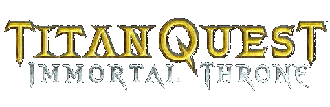

| 较小的上古神器 | 伟大的上古神器 | 天赐的上古神器 |
相信玩过TQIT的朋友曾经大多会为了合成神器而头疼。一来配方和材料难收集；二来由于不知道配方，常错过了一些材料而不得不跑回曾经路过的地方去苦苦搜寻。有了这本配方集，就可以让各位爱好收集的朋友，事先知道各种神器所需要的材料，而在游戏过程中就能注意收集了。 本书搜集了游戏中75个神器的合成配方并且附上了各个神器的外观图，方便大家合成对照。由于使用的汉化版本比较旧，所以，如果神器名称与各玩家的有所不同，请以其属性为准。另，本书还收录了timestop的《符文＆遗物掉落及合成属性说明》一文，方便各位在游戏时候寻找神器合成材料。 由于个人时间有限，制作匆忙，如有不足之处，还请大家多多指正，谢谢。 |
电子书制作：望月蚂蚁.
[欢迎转载，请注明出自游侠，谢谢。] |